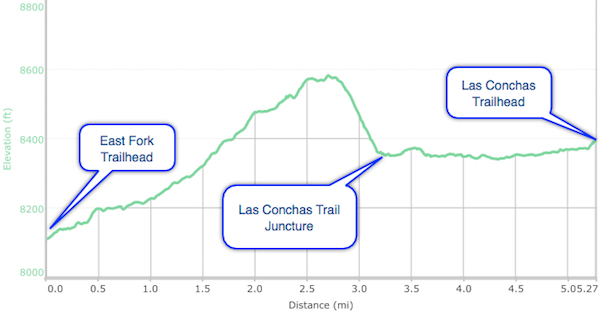

Hike New Mexico
w/ Tom & Ken
Jemez East Fork to Las Conchas
| Difficulty | Round-trip | Type | Elev. Chg. | Exposure | Wow Factor | Facilities | Seasons | Flickr | Get There |
|---|---|---|---|---|---|---|---|---|---|
| Easy | 5.8 miles | 2-car | 475 ft | Mostly shady | Forest & Mtn views | Outhouse | Not Winter | Album | Directions |



- Aug 16, 2016: Tom & Lorrie forge ahead on East Fork
- Aug 16, 2016: Redondo Peak from the trail
- Aug 16, 2016: Tom ascends yet another summit
- Aug 16, 2016: Beautiful view of the Las Conchas valley
- Aug 16, 2016: A convenient storage location
- Aug 16, 2016: Karen and Paget explore the Jemez River closeup
- https://www.flickr.com/photos/139088815@N08/28436866343/in/photostream/
- https://www.flickr.com/photos/139088815@N08/29021770516/in/photostream/
- https://www.flickr.com/photos/139088815@N08/28768226500/in/photostream/
- https://www.flickr.com/photos/139088815@N08/28978334981/in/photostream/
- https://www.flickr.com/photos/139088815@N08/28978342331/in/photostream/
- https://www.flickr.com/photos/139088815@N08/29021791616/in/photostream/
The trailhead for the East Fork is actually the point at which the trail (Forest Trail 137) crosses NM Highway 4. Heading east, the trail leads to Las Conchas Trail after about 3-1/2 miles, which then proceeds back to its own Trailhead on Highway 4. If you can have a car waiting at the end, the trail becomes a very easy day hike, with a very gradual ascent towards the Jemez, then down to the creek at Las Conchas. If you cross the street and follow Trail 137, it leads to Jemez Falls, then Macauley Warm Springs, ending at the Battleship Rock picnic area (see East Fork To Battleship Rock Hike).